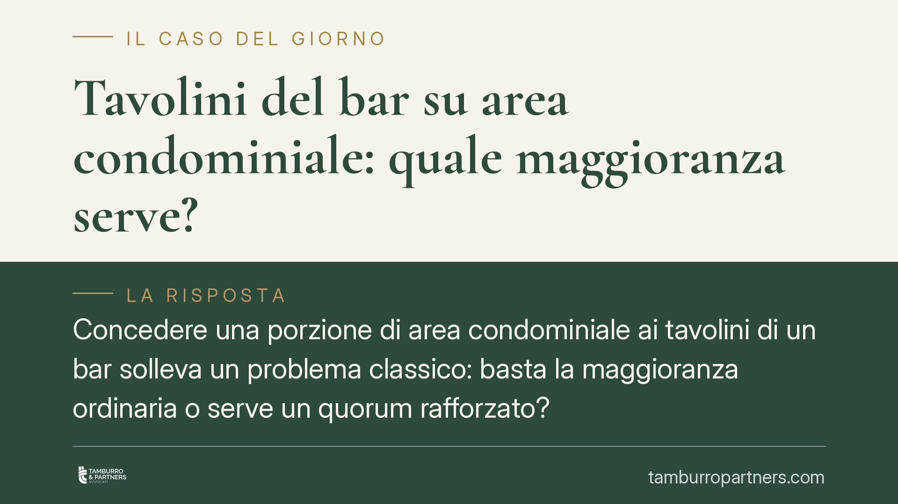

Tavolini del bar su area condominiale: quale maggioranza serve?
Concedere una porzione di area condominiale ai tavolini di un bar solleva un problema classico: basta la maggioranza ordinaria o serve un quorum rafforzato? La risposta dipende dalla natura del bene e dal tipo di utilizzo. Prima ancora, occorre distinguere il caso dell'area comune da quello del marciapiede pubblico, dove le regole condominiali non si applicano affatto.

Il nodo preliminare: area condominiale o suolo pubblico?
Prima di ragionare su maggioranze e delibere, serve chiarire un punto dirimente e spesso trascurato.
Il marciapiede è, nella grande maggioranza dei casi, suolo pubblico comunale. Non rientra tra le parti comuni dell'edificio elencate dall'art. 1117 cod. civ. Se l'area destinata ai tavolini è marciapiede pubblico, l'assemblea condominiale non ha alcun titolo per concederla: occorre un provvedimento del Comune, cioè una concessione di occupazione di suolo pubblico, con pagamento del relativo canone (oggi canone unico patrimoniale introdotto dalla L. 160/2019, disciplinato dai regolamenti comunali). La delibera condominiale, in tal caso, sarebbe semplicemente inefficace perché relativa a un bene di cui il condominio non dispone.
Il discorso cambia quando l'area è effettivamente parte comune: un cortile, un portico privato, un androne, uno slargo di proprietà condominiale. Solo qui hanno senso le regole codicistiche sull'uso, sulle innovazioni e sul mutamento di destinazione. Le considerazioni che seguono riguardano questa seconda ipotesi.
L'inquadramento normativo: tre discipline distinte
L'utilizzo di un bene comune da parte di terzi si colloca in una di tre categorie, con conseguenze diverse sui quorum.
Art. 1102 cod. civ. – Uso della cosa comune. Ciascun partecipante può servirsi del bene comune purché non ne alteri la destinazione e non impedisca agli altri di farne pari uso. La concessione temporanea a un terzo, che non trasforma il bene e non ne compromette la funzione, rientra in un atto di ordinaria gestione. In questo caso è sufficiente la maggioranza ordinaria prevista per le delibere assembleari.
Art. 1120 cod. civ. – Innovazioni. Se l'intervento comporta una modificazione materiale o funzionale della cosa comune, si è di fronte a un'innovazione. Il quorum si aggrava: l'art. 1120 rinvia all'art. 1136, comma 5, cod. civ., che richiede la maggioranza degli intervenuti in assemblea e i due terzi del valore dell'edificio.
Art. 1117-ter cod. civ. – Mutamento di destinazione d'uso. La norma, introdotta dalla L. 220/2012 (riforma del condominio), in vigore dal 18 giugno 2013, disciplina il caso in cui l'assemblea intenda modificare la destinazione d'uso delle parti comuni. Qui il quorum è particolarmente elevato: quattro quinti dei partecipanti al condominio e quattro quinti del valore dell'edificio, con procedura di convocazione formalizzata.
La questione pratica è dunque di qualificazione: la concessione stagionale di un'area comune per i tavolini è uso, innovazione o mutamento di destinazione?
Le implicazioni pratiche
L'orientamento giurisprudenziale in materia tende a ricondurre all'art. 1102 cod. civ. la concessione temporanea di una porzione di area comune, quando ricorrono tre presupposti:
- l'occupazione è limitata nel tempo (ad esempio stagionale) e non si traduce in un utilizzo stabile ed esclusivo;
- non vi è alterazione strutturale del bene (nessuna opera fissa, nessuna trasformazione materiale);
- resta garantito il transito e il pari uso da parte degli altri condòmini.
In presenza di questi elementi, la concessione non è né innovazione né mutamento di destinazione, e può essere deliberata a maggioranza ordinaria. Viene meno, invece, uno solo di tali presupposti — installazioni fisse, uso esclusivo prolungato, ostacolo al passaggio — e la delibera diventa vulnerabile, potendo richiedere i quorum rafforzati dell'art. 1120 o dell'art. 1117-ter.
Un ulteriore profilo di rischio riguarda il canone. La concessione a un terzo produce un vantaggio economico che spetta a tutti i condòmini. Un corrispettivo palesemente irrisorio o assente può integrare un pregiudizio per il condomino dissenziente e fondare l'impugnazione della delibera.
Cosa fare in concreto
- Verificare la titolarità dell'area. Accertare, sulla base di titoli e regolamento, se lo spazio è parte comune condominiale o marciapiede/suolo pubblico. Da questo dipende ogni passaggio successivo.
- Coordinare con il Comune. Se l'area confina o coincide con suolo pubblico, richiedere la concessione di occupazione e verificare gli obblighi di canone unico patrimoniale (L. 160/2019) e i regolamenti comunali.
- Formalizzare i tre presupposti nella delibera. Indicare durata, assenza di opere fisse e garanzia del transito, così da collocare l'atto nell'ambito dell'art. 1102 cod. civ.
- Definire un canone congruo. Prevedere un corrispettivo proporzionato al vantaggio concesso al gestore, per ridurre il rischio di impugnazione.
- Documentare i quorum. Verbalizzare con precisione la maggioranza raggiunta, tenendo conto che una diversa qualificazione dell'intervento impone quorum più elevati.
In caso di dubbio sulla natura del bene o sulla qualificazione dell'intervento, è opportuno verificare preventivamente la delibera prima della sua adozione.
---
*Contributo informativo a cura di Tamburro & Partners - Avv. Giuseppe Tamburro. Non costituisce parere legale.*
Ogni condominio ha una storia a sé.
Se gestisci un'amministrazione e vuoi un confronto su una specifica questione condominiale, scrivi allo studio. Ti rispondiamo entro un giorno lavorativo.